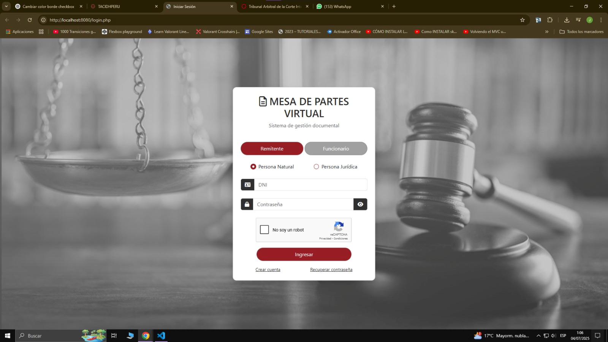
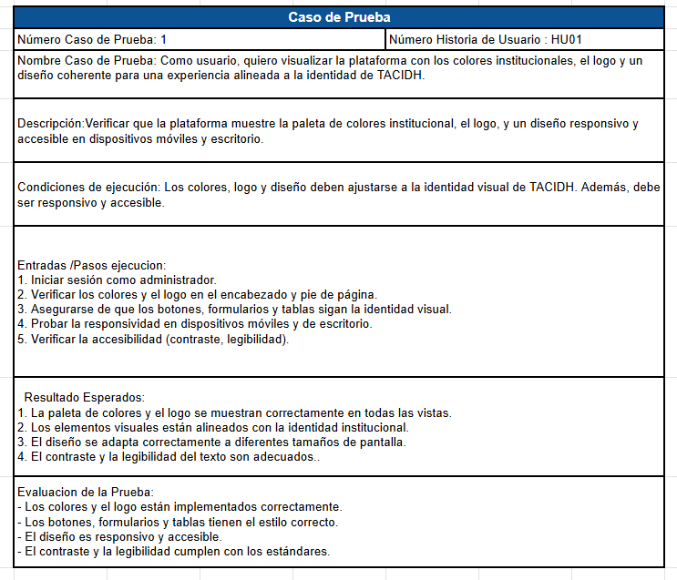
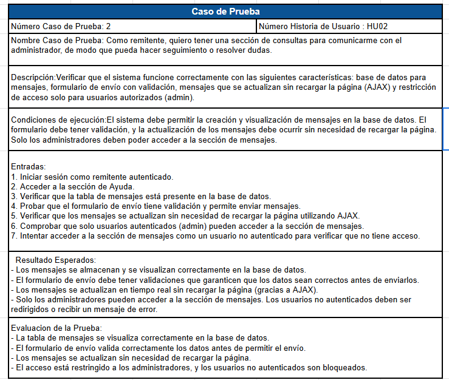
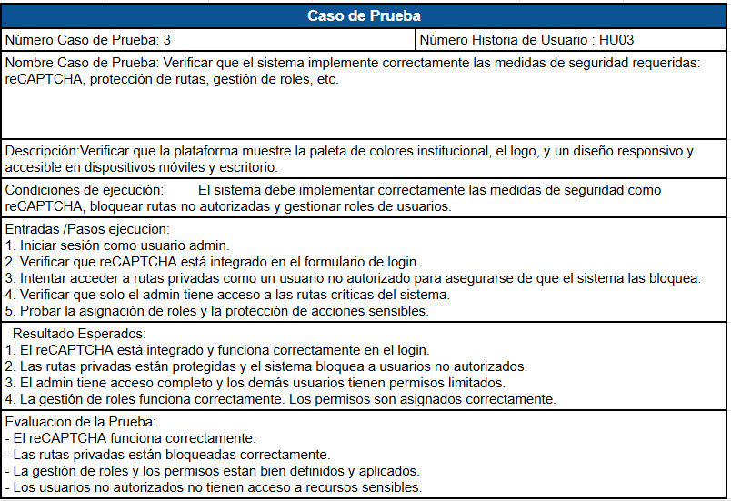
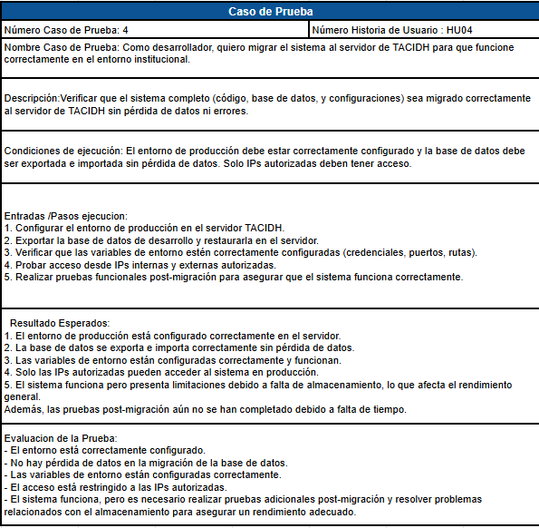
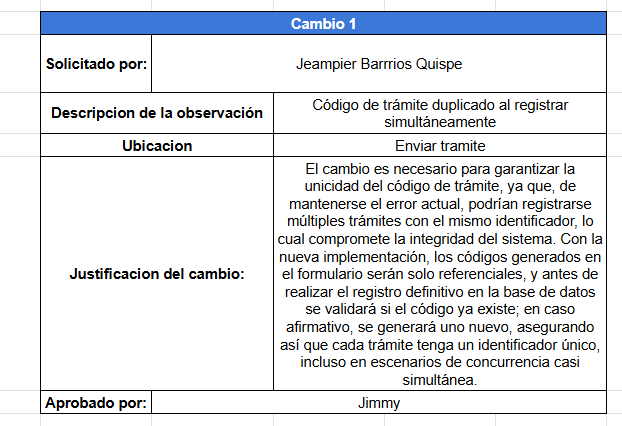
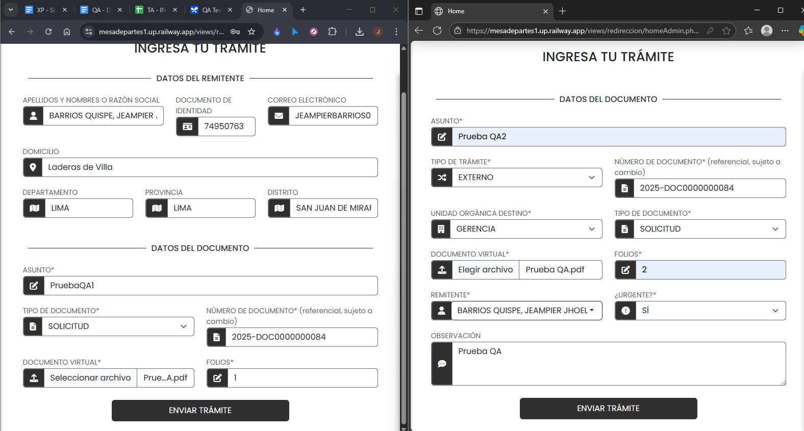

En este punto de codificación se visualizara, las historias de usuario con sus respectivas tareas.
15.1. Equipo principal XP
Coach
Manuel Silverio Velez de Villa Huacachi
Responsable de asegurar la adopción de XP, guiar al equipo en las mejores prácticas de desarrollo y garantizar la mejora continua.
Encargado de Seguimiento (Tracker)
Jesus Baltazar Paye Juarez
Encargado de la monitorización del progreso del equipo y el aseguramiento de que el proyecto se mantenga en el camino correcto para cumplir con los objetivos.
Cliente
Jhunior Pérez Gonzales
Cargo en la Empresa: Socio Accionista
Programadores
Pedro Javier Pablo Pascual
Huerta Vasquez Jimmy Alexander
Encargado de pruebas
Jeampier Jhoel Barrios Quispe ( QA tester )
Encargado de la monitorización del progreso del equipo y el aseguramiento de que el proyecto se mantenga en el camino correcto para cumplir con los objetivos.
15.2. Historias de Usuario y sus Tareas
.png)
15.3. Pruebas Unitarias
Pruebas Funcionales : Historia 1

Pruebas Funcionales : Historia 2
Pruebas Funcionales : Historia 3
Protección de rutas privadas para usuarios no autenticados.
Pruebas Funcionales : Historia 4
15.4. Casos de prueba
Caso de Prueba NR1: Historia de Usuario HU01
Caso de Prueba NR1: Historia de Usuario HU02
Caso de Prueba NR1: Historia de Usuario HU03
Caso de Prueba NR1: Historia de Usuario HU04
15.5. Pruebas generales de todo el Sistema
15.5.1 Caso 1
¿Qué prueba se realizó?: Código de trámite duplicado al registrar simultáneamente
Tabla Solicitud:
SOLUCIÓN:

15.5.2 Caso 2
¿Qué prueba se realizó?: Api de Reniec
- Error encontrado
Datos de la persona no figura correctamente
- Datos Reales
- Solicitud de cambio
- Solución del error
15.5.3. Caso 3
¿Qué prueba se realizó?:
Se realizó una prueba exhaustiva de los formularios de "Ingresar Trámite" para los perfiles
de Remitente y Funcionario. El objetivo fue verificar que existan validaciones adecuadas
tanto en el frontend (interfaz de usuario) como en el backend (servidor) para asegurar
la calidad e integridad de los datos.
- Error encontrado
El campo "Folios" presenta una validación inconsistente y restrictiva que perjudica la experiencia del usuario y no garantiza la integridad de los datos.
El campo no tiene un límite de caracteres visible. Sin embargo, al ingresar más de 10 caracteres numéricos y intentar enviar el formulario, el sistema arroja un error no especificado que bloquea el envío. Este límite de 10 caracteres es arbitrario y no proporciona una retroalimentación clara al usuario antes de que intente enviar el formulario.
- Solicitud de Cambio
.png)
- Solución del error

15.5.4. Caso 4
¿Qué prueba se realizó?:
Eliminación de un remitente desde el "Listado de Remitentes" en el módulo de Administración,
utilizando el rol de Administrador.
- Error encontrado
La funcionalidad de eliminar remitentes no está operativa. Al hacer clic en el ícono de la papelera, no se produce ninguna acción en la interfaz de usuario. El sistema no muestra el diálogo de confirmación, la página no se recarga y el registro del remitente permanece en la lista sin cambios. No se muestra ningún mensaje de error o éxito, dando la impresión de que el botón está inactivo o roto.
- Solicitud de Cambio
- Solución del error
15.6. Comparativa del Sistema Antiguo vs el Sistema Nuevo
15.6.1. Caso 1
Sistema Antiguo
LOGIN:
En el proceso de login no se encuentra implementado un CAPTCHA de seguridad, lo cual es
una medida importante para prevenir ataques automatizados. Esto es relevante al realizar
pruebas de seguridad con herramientas como Burp Suite, ya que la ausencia de dicho CAPTCHA
hace que técnicas como Intruder sean más fáciles de ejecutar durante los intentos de acceso
a la web.
- Sistema Nuevo
15.6.2. Caso 2
Pruebas de Inyección SQL (SQLi)
Sistema Antiguo
Descripción del Hallazgo:
En el proceso de autenticación del sistema de partes, al intentar ingresar un DNI y una contraseña,
se pudo ejecutar una inyección SQL:
Evidencia
Al ejecutar el payload mencionado, el sistema de autenticación permite el acceso al sistema
de partes y muestra los siguientes datos del "Remitente" comprometido:
Sistema Nuevo
15.6.3. Caso 3
Sistema Antiguo
Módulo seguimiento de expediente
Cuando presionas el botón para acceder al seguimiento de los expedientes,
la interfaz no se muestra de forma ordenada, lo que hace difícil su uso.
El problema está en la falta de estructura y estilos CSS, lo cual necesita
ser corregido para mejorar la usabilidad.
Sistema Nuevo